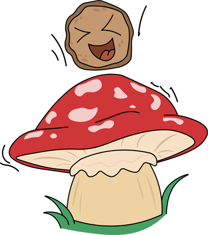

Drums
Het drumstel bestaat uit een aantal trommels, en een aantal bekkens. De basdrum, de snaredrum, de toms, de
hihat en de cymbals. Je bespeelt het drumstel door er met drumstokken op te slaan.
Het drumstel is belangrijk voor het ritme van een liedje. Ze zorgen voor het tempo (snelheid) van een liedje
en bepalen de sfeer.
Gitaar
De gitaar is een instrument met zes snaren. Er bestaan elektrische en akoestische gitaren. Door de snaren 1
voor 1, of tegelijk te bespelen komt er geluid vrij. Als je de snaren op een bepaalde fret indrukt, zal het
geluid hoger of lager klinken.
Op de gitaar kun je van alles doen. Denk aan akkoorden, maar ook solo's!
Basgitaar
De basgitaar lijkt erg op de normale gitaar. Hij heeft alleen twee snaren minder. Op de basgitaar kan je
alleen lage noten spelen, waardoor hij minder divers is als de normale gitaar.
De basgitaar word gebruikt om een ritme neer te leggen. Eigenlijk een soort bruggetje tussen de drums en de
gitaar!
Keys
Het keyboard is een toetseninstrument. De akoestische versie van het keyboard is de piano. Op het keyboard
kan je veel verschillende soorten muziek maken, omdat je de toon heel simpel aanpast.
Vaak word het keyboard gebruikt om akkoorden te spelen, maar je kan ook enkele noten en solo's spelen.
Trompet
De trompet is een instrument wat je bespeelt door middel van je adem. Er komt een zoemend geluid vrij. Door
middel van de knoppen op de trompet kan je de hoogte van het geluid aanpassen.
De trompet wordt in veel liedjes gebruikt voor melodieën.
Synthesizer
Op een synthesizer kunnen veel verschillende geluiden gemaakt worden, zoals baslijnen, drums, melodietjes,
gitaar en pianoakkoorden.
De synthesizer wordt vaak bestuurd via een toetsenbord, zoals een piano.